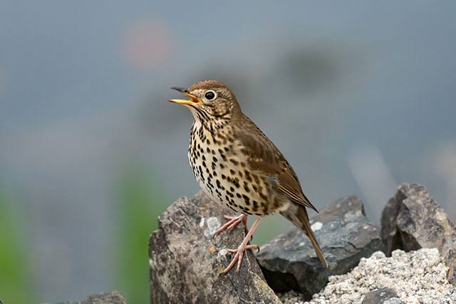

Thrush
Birds
Turdidae: Rafinesque, 1815
Lifespan: American robin: 2 years
Scientific name: Turdidae
Kingdom: Animalia
Mass: Common blackbird: 100 g, Song thrush: 68 g, MORE Encyclopedia of Life
Length: Wood thrush: 19 – 21 cm, American robin: 23 – 28 cm, Eastern bluebird: 16 – 21 cm, Western bluebird: 16 – 19 cm
Thrush, any of the numerous species belonging to the songbird family Turdidae, treated by some authorities as a subfamily of the Old World insect eaters, family Muscicapidae.
Thrushes are widely considered closely related to the Old World warblers (Sylviidae) and flycatchers (Muscicapidae), with which they intergrade through several genera.
Generally, thrushes are slender-billed songbirds with the tarsus (lower leg) “booted”—i.e., covered in front with a single long scale instead of many short ones. The young are usually spotted in the first plumage, and there is a single annual molt.
The chat-thrushes, e.g., the western bluebird (Sialia mexicanus), are generally smaller, with slenderer legs, thinner bill with fewer bristles at its base, and more colourful plumage (see chat-thrush).
Thrushes vary from 13 to 30 cm (5 to 12 inches) in length. They are usually not brightly coloured, but many have patches of bright yellow, red, or blue on otherwise plain plumage.
Thrushes occur virtually worldwide but are most diverse in the Old World, especially in Africa. The northern species are strong migrants. Occupying a wide range of arboreal and terrestrial habitats, thrushes eat insects and fruit.
a few take snails or earthworms. They build open cup-shaped nests (or, in the case of a few of the chat-thrushes, occupy cavities), in which they lay three to six pale, often bluish eggs.
Biology of Thrush
Woodpeckers have a mostly cosmopolitan distribution, although they are absent from Australasia, Madagascar, and Antarctica. They are also absent from some of the world's oceanic islands, although many insular species are found on continental islands.
The true woodpeckers, subfamily Picinae, are distributed across the entire range of the family. The Picumninae piculets have a pantropical distribution, with species in Southeast Asia, Africa, and the Neotropics, with the greatest diversity being in South America.
The second piculet subfamily, Nesoctitinae, has a single member, the Antillean piculet, which is restricted to the Caribbean island of Hispaniola. The wrynecks (Jynginae) are found exclusively in the Old World, with the two species occurring in Europe, Asia, and Africa.
The majority of woodpeckers are sedentary but there are a few examples of migratory species such as the rufous-bellied woodpecker and yellow-bellied sapsucker, and the Eurasian wryneck breeds in Europe and west Asia and migrates to the Sahel in Africa in the winter.
More northerly populations of Lewis's woodpecker, northern flicker, Williamson's sapsucker, red-breasted sapsucker and red-naped sapsucker all move southwards in the fall in North America.
Most woodpecker movements can be described as dispersive, such as when young birds seek territories after fledging, or eruptive, to escape harsh weather conditions. Several species are altitudinal migrants, for example the grey-capped woodpecker, which moves to lowlands from hills during the winter months. The woodpeckers that do migrate do so during the day.
Habitat requirements
Overall, woodpeckers are arboreal birds of wooded habitats. They reach their greatest diversity in tropical rainforests, but occur in almost all suitable habitats including woodlands, savannahs, scrublands, and bamboo forests.
Even grasslands and deserts have been colonised by various species. These habitats are more easily occupied where a small number of trees exist, or, in the case of desert species like the Gila woodpecker, tall cacti are available for nesting.
Some are specialists and are associated with coniferous or deciduous woodland or even, like the acorn woodpecker, with individual tree genera (oaks in this case).
Other species are generalists and are able to adapt to forest clearance by exploiting secondary growth, plantations, orchards and parks. In general, forest-dwelling species need rotting or dead wood on which to forage.
A number of species are adapted to spending a portion of their time feeding on the ground, and a very small minority have abandoned trees entirely and nest in holes in the ground. The ground woodpecker is one such species, inhabiting the rocky and grassy hills of South Africa, and the Andean flicker is another.
Behaviour
The majority of woodpeckers live solitary lives, but the spectrum of behaviour ranges from highly antisocial species that are aggressive towards their own kind, to species that live in groups.
Solitary species will defend such feeding resources as a termite colony or fruit laden tree, driving away other conspecifics and returning frequently until the resource is exhausted.
Aggressive behaviours include bill-pointing and jabbing, head shaking, wing flicking, chasing, drumming and vocalisations. Ritual actions do not usually result in contact and birds may "freeze" for a while before they resume their dispute.
The coloured patches may be flouted, and in some instances, these antagonistic behaviours resemble courtship rituals.
Drumming
Drumming is a form of non-vocal communication used by most species of woodpecker and involves the bill being repeatedly struck on a hard surface with great rapidity.
After a pause, the drum roll is repeated, each species having a pattern which is unique in the number of beats in the roll, the length of the roll, the length of the gap between rolls and the cadence.
The drumming is mainly a territorial call, equivalent to the song of a passerine, with male birds drumming more frequently than females.
Woodpeckers choose a surface that resonates, such as a hollow tree, and may use man-made structures such as gutters and downpipes. Drumming serves for the mutual recognition of conspecifics and plays a part in courtship rituals. Individual birds are thought to be able to distinguish the drumming of their mates and that of their neighbours.
Calls
Woodpeckers do not have such a wide range of songs and calls as do passerine birds, and the sounds they make tend to be simpler in structure.
Calls produced include brief high-pitched notes, trills, rattles, twittering, whistling, chattering, nasal churrs, screams and wails. These calls are used by both sexes in communication and are related to the circumstances of the occasion.
these include courtship, territorial disputes and alarm calls. Each species has its own range of calls, which tend to be in the 1 to 2.5 kHz range for efficient transmission through forested environments. Mated couples may exchange muted, low-pitched calls, and nestlings often issue noisy begging-calls from inside their nest cavity.
The wrynecks have a more musical song and in some areas, the song of the newly arrived Eurasian wryneck is considered to be the harbinger of spring. The piculets either have a song consisting of a long descending trill, or a descending series of two to six (sometimes more) individual notes, and this song alerts ornithologists to the presence of the birds, as they are easily overlooked.
Diet and feeding
The majority of woodpecker species live up to their name and feed on insects and other invertebrates living under bark and in wood, but overall the family is characterized by its dietary flexibility, with many species being both highly omnivorous and opportunistic.
The diet includes ants, termites, beetles and their larvae, caterpillars, spiders, other arthropods, bird eggs, nestlings, small rodents, lizards, fruit, nuts and sap. Many insects and their grubs are taken from living and dead trees by excavation. The bird may hear sounds from inside the timber indicating where it will be productive to create a hole.
Other means are also used to garner prey. Some species, such as the red-naped sapsucker, sally into the air to catch flying insects, and many species probe into crevices and under bark, or glean prey from leaves and twigs.
The rufous woodpecker specialises in attacking the nests of arboreal ants and the buff-spotted woodpecker feeds on and nests in termite mounds. Other species such as the wrynecks and the Andean flicker feed wholly or partly on the ground.
Breeding
All members of the family Picidae nest in cavities, nearly always in the trunks and branches of trees, well away from the foliage. Where possible, an area of rotten wood surrounded by sound timber is used. Where trees are in short supply, the gilded flicker
and ladder-backed woodpecker excavate holes in cactus and the Andean flicker and ground woodpecker dig holes in earth banks. The campo flicker sometimes chooses termite mounds, the rufous woodpecker prefers to use ants nests in trees and the bamboo
woodpecker specialises in bamboos. Woodpeckers also excavate nest holes in residential and commercial structures as well as wooden utility poles.
Woodpeckers and piculets will excavate their own nests, but wrynecks will not, and need to find pre-existing cavities. A typical nest has a round entrance hole that just fits the bird, leading to an enlarged vertical chamber below.
No nesting material is used, apart from some wood chips produced during the excavation; other wood chips are liberally scattered on the ground providing visual evidence of the site of the nest.
Many species of woodpeckers excavate one hole per breeding season, sometimes after multiple attempts. It takes around a month to finish the job and abandoned holes are used by other birds and mammals that are cavity nesters unable to excavate their own holes.